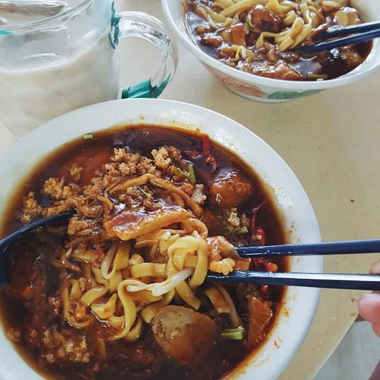

Lor Mee

Description
Noodles are smothered in a savory, and tangy thick dark gravy accompanied by slices of pork belly and other toppings.
Ingredients
- Pork belly
- Chinese five-spice powder
- Cinnamon
- Other stuffs
Steps
- In a deep pot, add in 1/2 2 cups water, 1/2 cup dark soy sauce, ginger slices, garlic slices, 1 tablespoon five spice powder and 20g sugar. Bring to boil.
- Add in 1 strip of pork belly. Turn to low heat and simmer for 30 mins.
- Add in 2 hard boiled eggs and simmer for another 15-20 mins.
- Blanch yellow noodles in boiling water. Rinse under cold water and drain. Set in the plate.
- Take the pork belly and eggs out to cool down. Leave 1 cup braised soy in the pot. Add in a 1/2 tablespoon light soy sauce and salt to season.
- Add in 1 beaten egg. Stir while pouring. At last, add in starch water to thicken the sauce.
- Serve noodles with braised pork belly slices, braised egg, fish cake, and thick sauce over it.